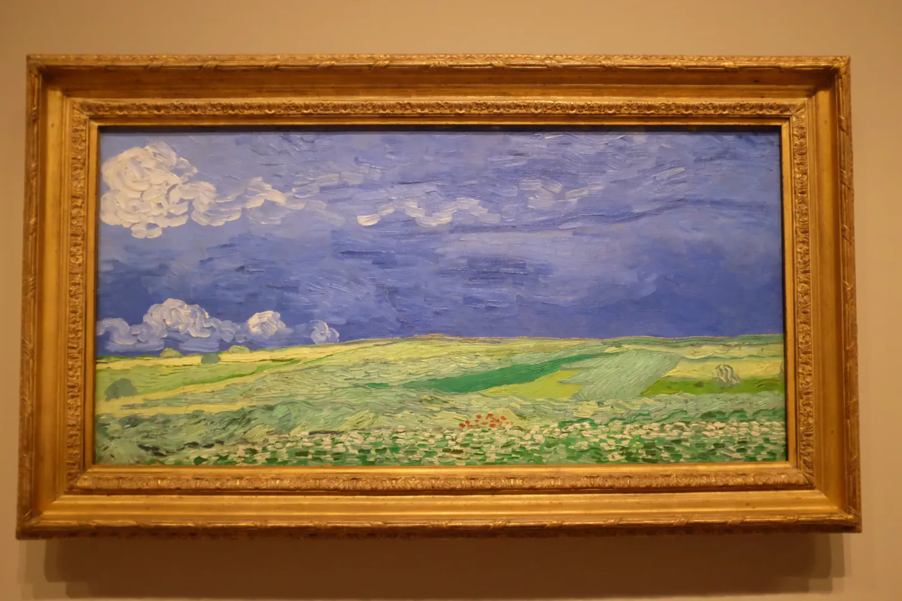

Slate and Vine
My first visit to Amsterdam, back in January 2016, was all bare branches and cold canals. This time the trees were in full leaf under a clear June sky. I ate ramen for dinner and kept wandering until the light ran out over the water. The next day I went to the Van Gogh Museum, where thunderclouds gather over a wheat field, a bouquet of irises glows against golden yellow, and a knot of tree roots twists in blue and orange. Van Gogh painted the wheat field and the roots in July 1890, the last weeks of his life. It was a short return, but a good one. Then it was on to Germany!
The Mosel never goes straight, doubling back on itself between steep green hills. At Bernkastel-Kues it swings around a wide bend, with Bernkastel on one bank and Kues facing it across the water, joined by a road bridge. They have been one town since 1905. A river cruiser was docked right beside the parking lot, and somehow the asphalt did nothing to spoil the view. Behind the quay, half-timbered houses lean together over cobblestone lanes, and above them the vines climb slopes so steep that much of the work is still done by hand. This is Riesling country, and the soil is slate, which soaks up the sun by day and gives the warmth back to the vines after dark. Even the roofs are slate.

I followed a footpath up through the vineyards above the old town. Between the rows you look across slate roofs to the church spire. At the top stood Burg Landshut, a castle ruin under big white clouds. The archbishops of Trier once used it as a summer residence, until a fire in 1692 left the roofless ruin you see today. There is a restaurant terrace inside the old walls, so plan the climb around lunch. Looking back down, the whole bend of the river lay below me. The boats, the bridge, the entire town, even the parking lot, all of it fit inside one curve of the water.
The next morning, near the village of Plein, I found an old red sandstone viaduct arching over a wooded ravine. The railway it carried is a bike path now, which seems like a fine second career for a railway. A couple of days later Cochem added one more castle on one more hill. I only saw a few of the Mosel's many bends, and I would happily follow the rest.